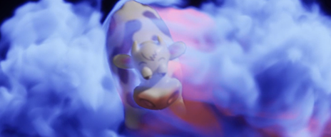
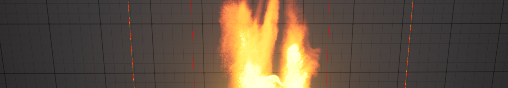
Niagara Fluids — это плагин, который предоставляет шаблоны для простого добавления симуляций в реальном времени в ваши проекты. Доступно несколько различных типов шаблонов:
2D-газ
2D-жидкость
3D-газ
3D-жидкость
Мелководье
2D-моделирование более эффективно и лучше подходит для игр и использования в режиме реального времени. 3D-моделирование выглядит более реалистично, но требует больше памяти и ресурсов графического процессора. Поэтому 3D-моделирование лучше всего подходит для создания эффектов для героев или видеороликов. При необходимости результаты можно сохранить в виде флипбука и применить к текстурам для повышения производительности при использовании в режиме реального времени. В этом справочном руководстве дается обзор шаблона Grid 3D Gas Fire в качестве примера принципов проектирования.
Чтобы создать новую симуляцию Niagara Fluids, щелкните правой кнопкой мыши в ящике содержимого и выберите Систему Niagara, затем выберите Niagara Fluids > 3D Gas в меню слева, чтобы просмотреть все доступные шаблоны. Чтобы узнать больше о включении плагина и создании вашего первого проекта, ознакомьтесь с Кратким началом работы с Niagara Fluids. На выбор предлагается множество различных примеров 3D-изображений газа.
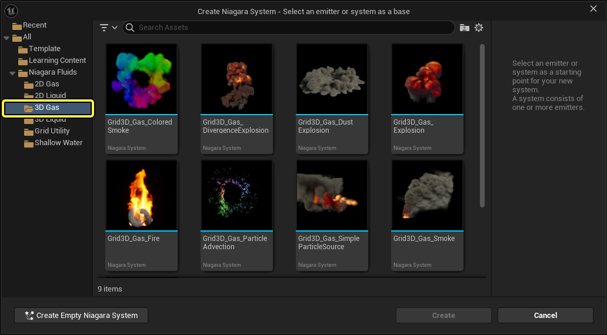
В излучателях жидкости используется наследование для постепенного добавления новых функций. Например, на следующей схеме показана структура наследования в 3D-излучателях газа.
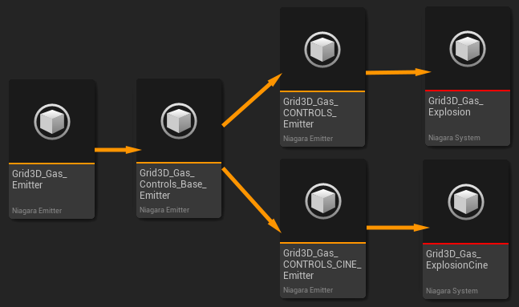
Назначение каждого излучателя:
Все параметры, которые вы хотите изменить, чтобы настроить внешний вид и поведение вашей модели, будут доступны в разделе «Сводка по излучателям». Для удобства сводка разделена на следующие разделы:
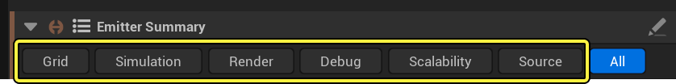
В этом справочном руководстве описаны параметры, доступные в каждом из этих разделов.
Моделирование движения газа осуществляется с помощью сетки, разделенной на ячейки. Каждая ячейка содержит информацию о плотности, температуре и скорости среды в этом месте. Чем меньше размер ячеек, тем выше качество моделирования, но при этом снижается производительность.
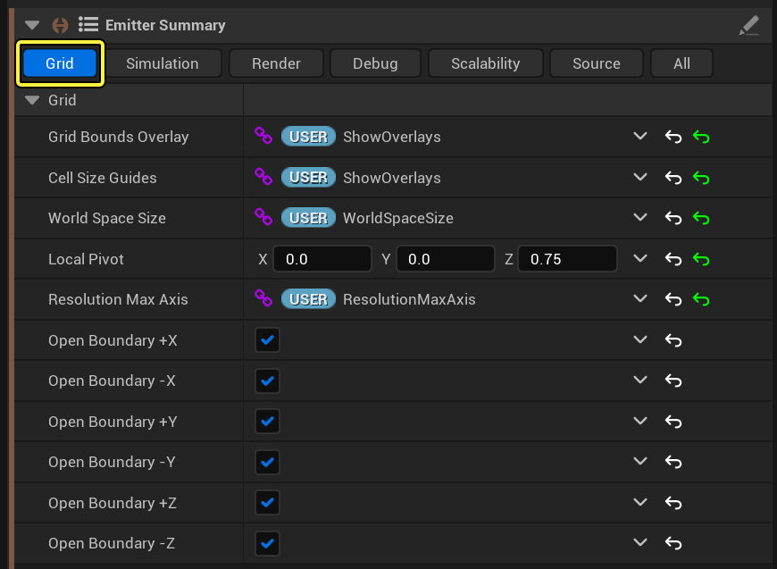
Раздел моделирования разбит на три подраздела: моделирование, столкновение и турбулентность. Все эти параметры влияют на то, как моделирование меняется с течением времени в зависимости от таких характеристик, как плотность, температура, выталкивающая сила и т. д.
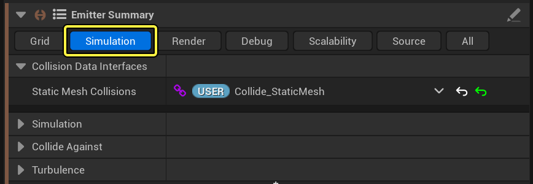
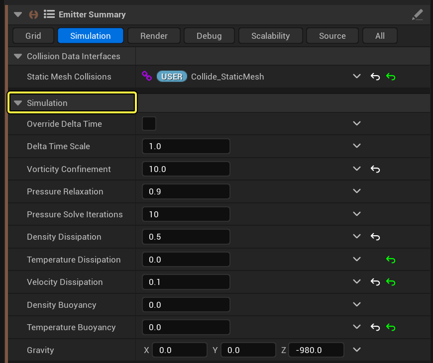
Вы можете настроить реакцию симуляции на объекты на своем уровне. Самый распространенный способ — сделать так, чтобы объекты сталкивались при контакте с симуляцией. Включение или отключение параметров в разделе Столкновение добавляет или удаляет интерфейсы данных для этих типов объектов. Если функция Collide Against включена, выберите симуляцию в редакторе уровней, чтобы настроить параметры переопределения и выбрать конкретных акторов. Эти акторы будут сталкиваться с симуляцией. Пример смотрите в кратком руководстве по Niagara Fluids.
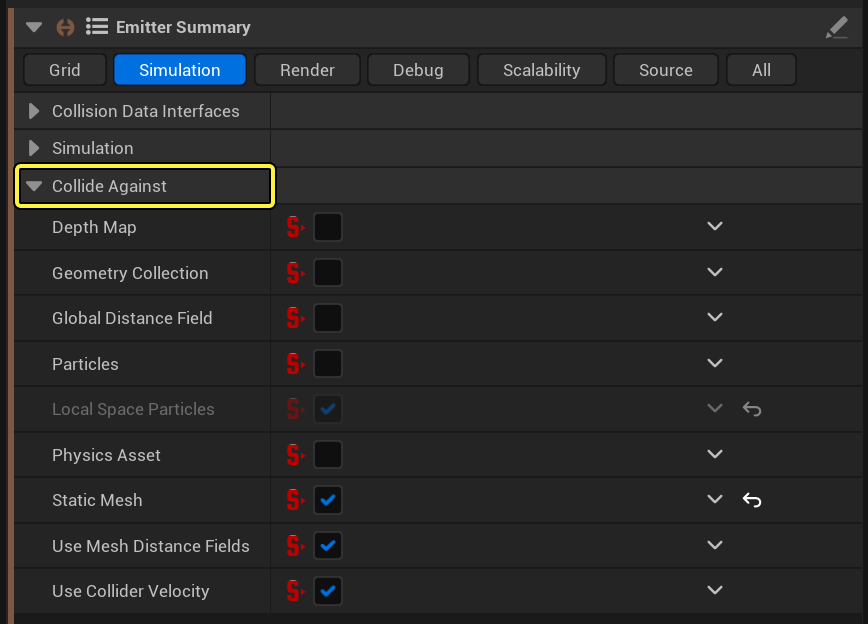
В излучателе можно включить три режима турбулентности. Начальная турбулентность применяется только на этапе инициализации. Турбулентность 1 и 2 применяются во время моделирования.
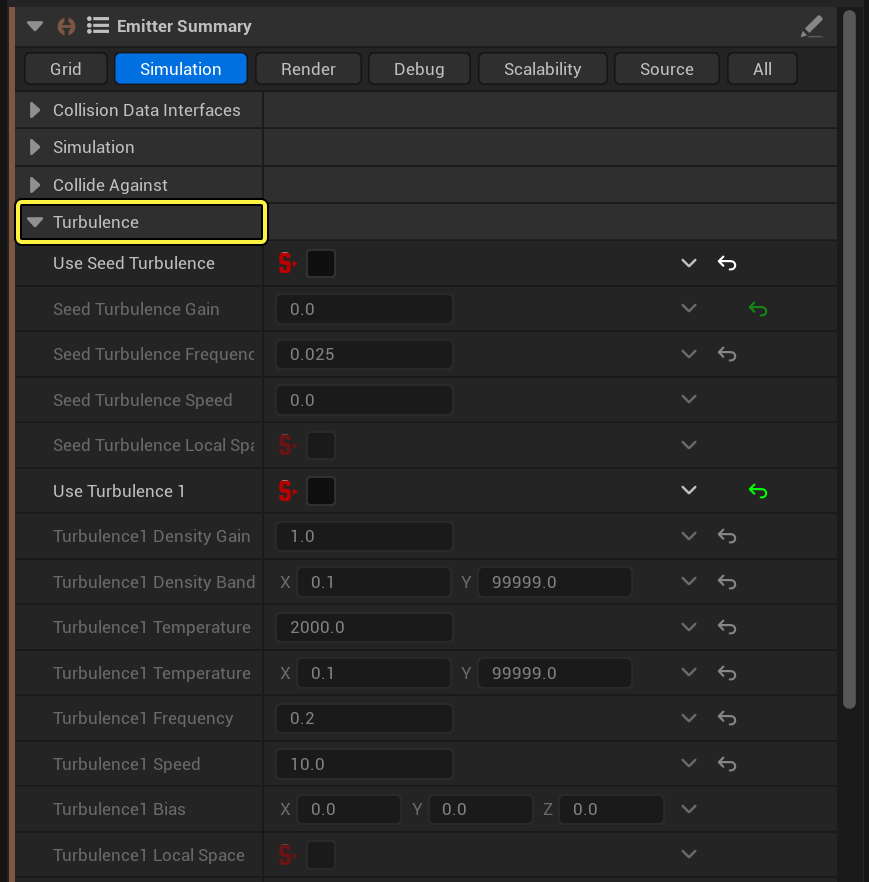
| Параметр | Описание |
|---|---|
| Усиление Турбулентности семян | Установите силу турбулентности. Это применяется только к начальному кадру. |
| Частота Турбулентности семян | Здесь задается размер элементов турбулентности. Чем меньше число, тем крупнее будут элементы. Это применяется только к кадру инициализации. |
| Скорость Турбулентности семян | Укажите, с какой скоростью должна двигаться турбулентность. Это применяется только к кадру инициализации. |
| Локальное пространство Затравочной Турбулентности | Если эта функция включена, турбулентность будет следовать за локальным пространством симуляции. Если эта функция отключена, турбулентность будет зафиксирована в мировом пространстве. Это применяется только к кадру инициализации. |
| Увеличение плотности турбулентности | Установите силу турбулентности. Это можно сделать, изменив плотность и/или температуру. |
| Полоса Плотности Турбулентности | Ограничьте турбулентность определенным диапазоном плотностей. |
| Увеличение температуры турбулентности | Установите силу турбулентности. Это можно сделать, изменив плотность и/или температуру. |
| Диапазон Температур Турбулентности | Ограничьте турбулентность в заданном диапазоне температур. |
| Частота турбулентности | Это задает размер элементов турбулентности. Чем меньше число, тем крупнее будут элементы. |
| Скорость турбулентности | Задайте скорость перемещения турбулентности. |
| Смещение турбулентности | Сместите шум в сторону от нуля, чтобы определить направление турбулентности. |
| Локальное пространство Турбулентности | Если эта функция включена, турбулентность будет следовать за локальным пространством симуляции. Если эта функция отключена, турбулентность будет зафиксирована в мировом пространстве. |
Свойства рендеринга разделены на два подраздела: «Рендеринг» и «Освещение».
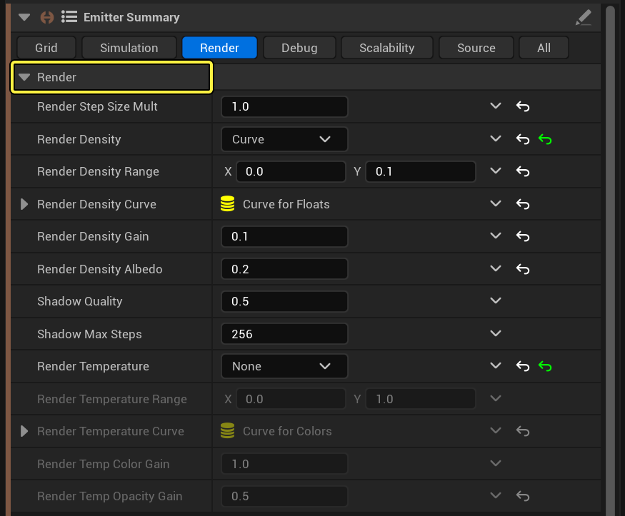
| Параметр | Описание |
|---|---|
| Размер шага рендеринга Mult | Моделирование выполняется путем разбиения объема на ячейки и последующей выборки данных в этих ячейках. По умолчанию размер шага по объему соответствует размеру ячеек. Если уменьшить значение этого множителя, симуляция будет выполняться несколько раз для каждой ячейки. Это полезно, когда текстура модулирует данные симуляции или при рендеринге детализированного огня./td> |
| Плотность рендеринга | Этот параметр определяет, нужно ли отображать плотность. Вы можете выбрать Нет, Линейно или Кривая. При линейном отображении данные в сетке сопоставляются с непрозрачностью газа. Или вы можете задать кривую для более точного управления. |
| Диапазон Плотности Рендеринга | Задайте диапазон значений плотности для рендеринга. Первое значение должно быть значением плотности, при котором объект будет прозрачным, а второе — значением плотности, при котором объект будет максимально непрозрачным. |
| Кривая плотности рендеринга | Если вы установили плотность рендеринга на кривую, то с помощью этого параметра можно задать кривую. Разверните поле, чтобы открыть редактор кривых. |
| Увеличение плотности рендеринга | Это значение добавляет множитель к конечной плотности изображения. |
| Альбедо плотности Рендеринга | Это значение представляет собой число с плавающей запятой, которое меняет цвет дыма с черного на белый. |
| Качество тени | Запеченные тени рассчитываются путем разбиения объема на ячейки, а затем пошагового обхода объема для выборки данных моделирования в этих ячейках. Измените это значение, чтобы выполнять выборку данных моделирования несколько раз для каждой ячейки. |
| Максимальное количество Шагов Тени | Ограничьте количество шагов при выборке теней. |
| Температура Рендеринга | Выберите способ отображения температуры компонента. Вы можете выбрать «Нет», «Абсолютно черное тело» или «Кривая».«Нет» не отображает значения температуры.«Абсолютно черное тело» отображает реалистичный огонь, переходящий от черного к красному, оранжевому, желтому и белому.«Кривая» позволяет задать собственные значения цвета. |
| Диапазон Температур Рендеринга | Установите диапазон значений температуры, соответствующих температуре рендеринга. Это применимо только в том случае, если температура рендеринга установлена на «Абсолютно черное тело» или «Кривая». |
| Температурная кривая Рендеринга | Если для параметра «Температура рендеринга» установлено значение «Абсолютно черное тело», альфа-компонент этой кривой определяет непрозрачность огня.Если для параметра «Температура рендеринга» установлено значение «Кривая», эта кривая определяет и цвет, и непрозрачность газа. |
| Усиление цвета при рендеринге | Добавьте дополнительный множитель к цвету газа. |
| Увеличение временной Непрозрачности Рендеринга | Добавьте дополнительный множитель к непрозрачности газа. |
В разделе Освещение представлены интерфейсы данных для подключения любых направленных источников света, которые вы настроили на своем уровне с помощью параметров переопределения. Если к этим интерфейсам данных не подключены источники света, применяется освещение по умолчанию. Чтобы изменить параметры освещения по умолчанию, нажмите кнопку Показать дополнительные параметры.
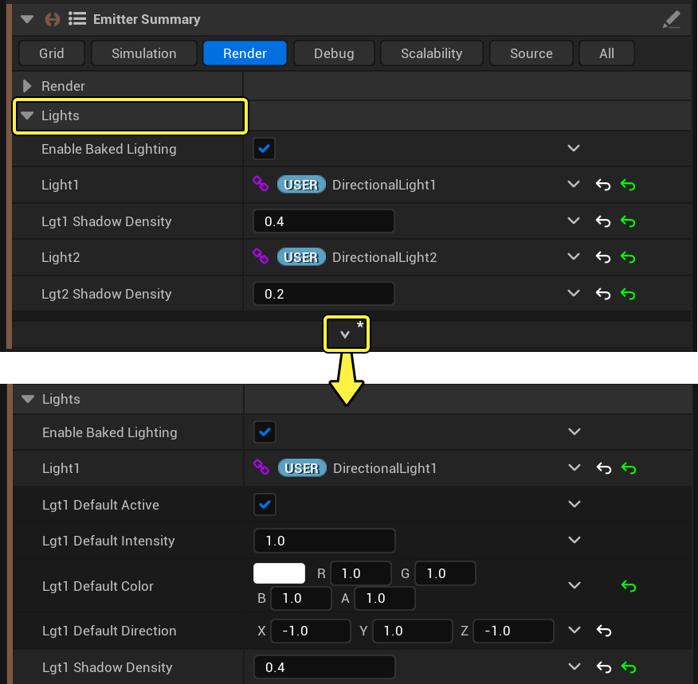
| Параметр | Описание |
|---|---|
| Свет1/2 | Этот интерфейс данных считывает атрибуты источника света, подключенного к параметрам переопределения системы Niagara в редакторе уровней. |
| Lgt1/2 Плотность тени | Задайте степень затемнения компонента плотности. |
| Lgt1/2 Интенсивность по умолчанию | Установите яркость подсветки по умолчанию. |
| Цвет по умолчанию Lgt1/2 | Установите цвет подсветки по умолчанию. |
| Направление по умолчанию Lgt1/2 | Задайте направление света по умолчанию. Это направление задается вектором в мировом пространстве. |
Используйте эти параметры для отладки моделирования.
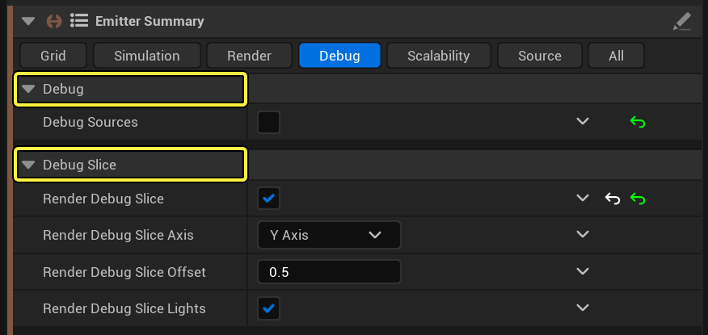
| Параметр | Описание |
|---|---|
| Источники отладки | Включите эту опцию, чтобы при каждом обновлении сетки данные заменялись исходными данными. Так вы увидите, что именно источники привносят в симуляцию. |
| Фрагмент рендеринга отладки | Включите эту опцию, чтобы отобразить 2D-срез внутри сетки. Плотность отображается в красном канале. Температура отображается в зеленом канале. Суммарная интенсивность света отображается в синем канале. |
| Ось среза рендеринга отладки | Выберите ось, относительно которой будет ориентирован срез. |
| Смещение фрагмента рендеринга отладки | Укажите, на каком расстоянии от оси должен отображаться срез. Это значение должно находиться в диапазоне от 0 до 1, где 0,5 — центральная точка. |
| Индикаторы фрагмента рендеринга отладки | Включите эту опцию, чтобы отобразить интенсивность света в синем канале. |
Используйте настройки масштабируемости, чтобы переопределить параметры, зависящие от параметра Качество в вашей симуляции. По умолчанию переопределения масштабируемости применяются при использовании качества Кинематографическое. Например, переопределение масштабируемости может пригодиться, когда вы хотите отрендерить кинематографическую последовательность с помощью очереди рендеринга фильма. В очереди рендеринга фильма есть настройка Game Overrides, которая автоматически меняет уровень качества на кинематографический при рендеринге. Таким образом, вы можете установить для параметра «Переопределение масштабируемости» качество «Кинематографическое», но при этом работать в сцене в интерактивном режиме с более низким, но более быстрым качеством. Затем, когда вы нажмете кнопку «Рендеринг» в очереди рендеринга фильма, вступят в силу настройки высокого качества.
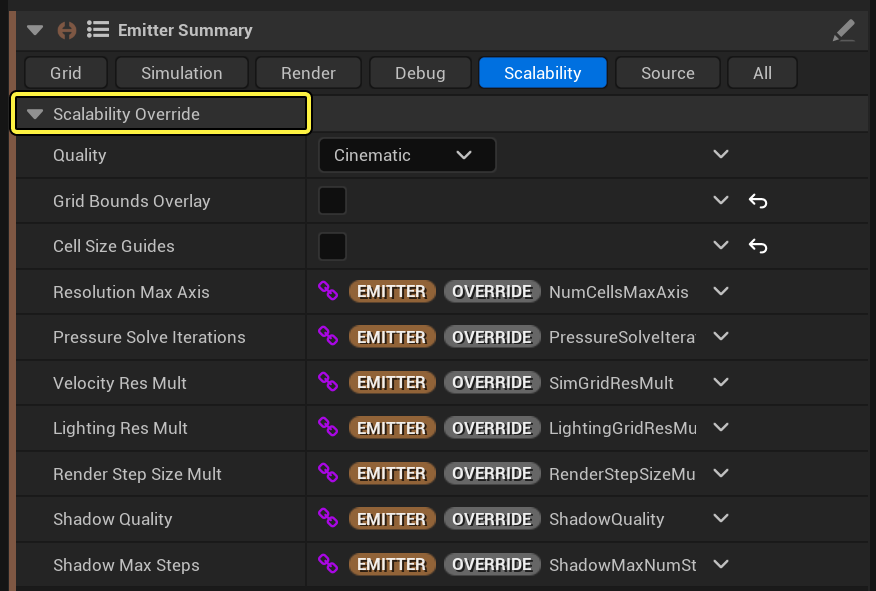
Измените параметры источника, чтобы получить информацию о входящих частицах.
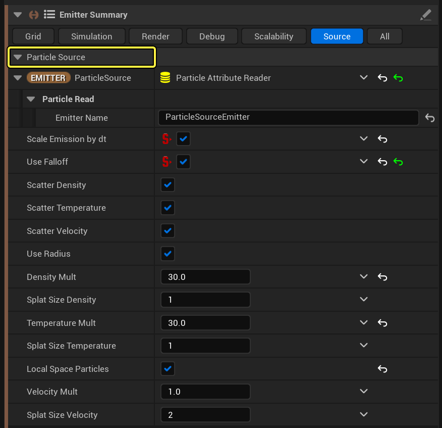
В шаблоне для Grid 3D Gas Explosion Cine есть дополнительный набор параметров. Выберите Сводку по эмиттерам в Grid3D_Gas_CONTROLS_CINE_Emitter. Затем перейдите на вкладку Все и найдите раздел Текстура. Этот излучатель включает в себя этап моделирования, на котором координаты текстуры передаются через симуляцию. Входящий в комплект материал MI_RayMarch_Fire_Ramps_Tex будет использовать эти координаты для наложения шума на рендер.
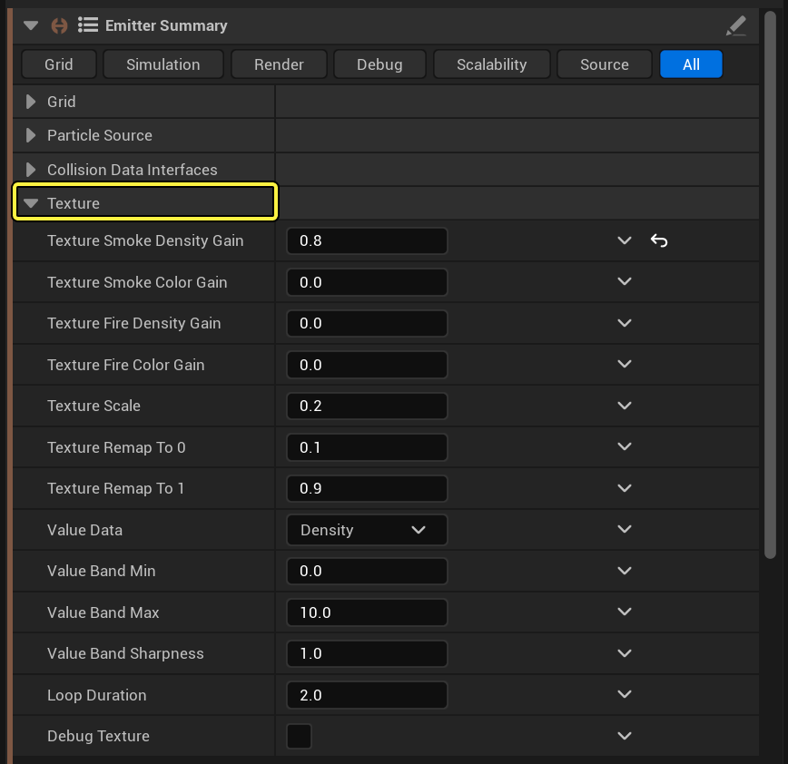